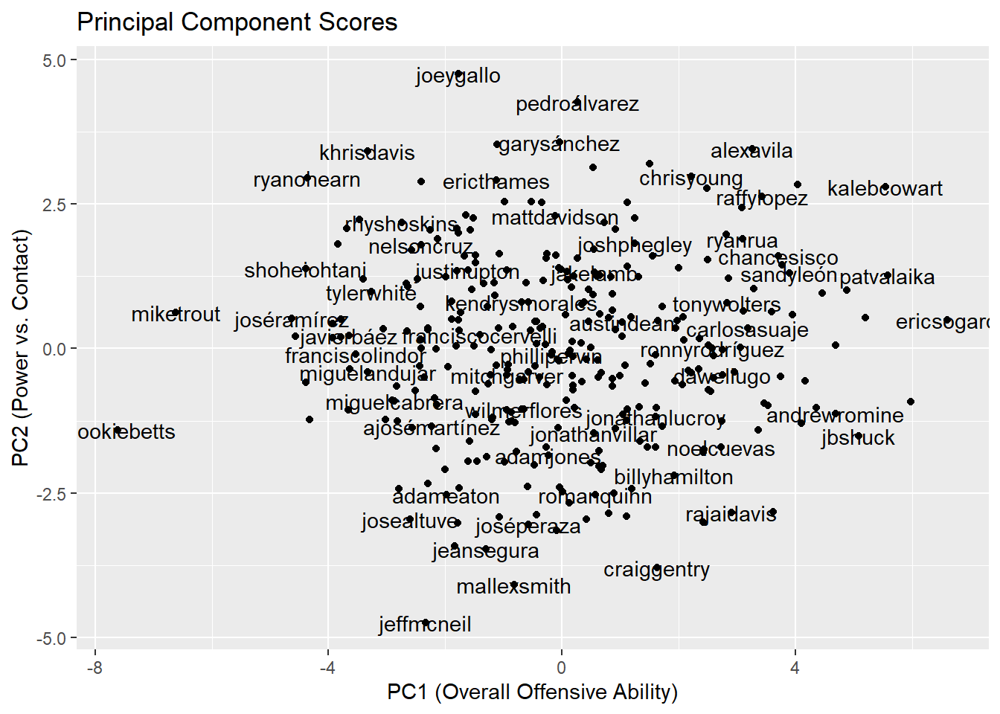
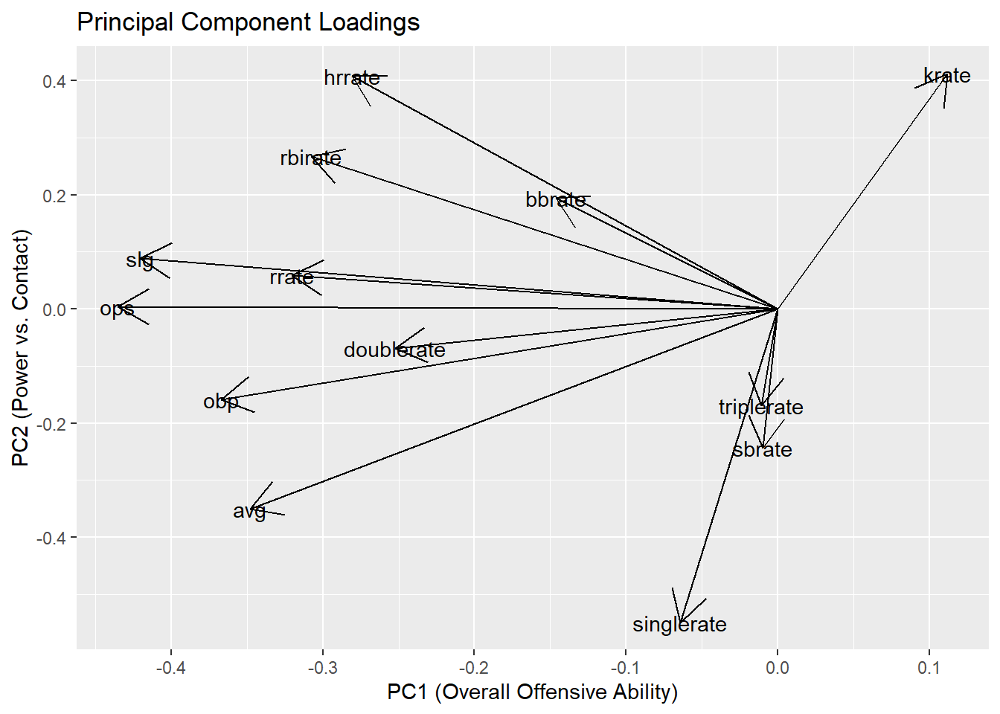

library(here)
library(readr)
library(dplyr)
library(rsample)
library(ggplot2)
library(tidymodels)
library(tidyverse)
library(Lahman)
here::i_am("math-437-project-template.qmd")Using Principal Components to Predict All Star Status from Batting Statistics
Packages Used In This Analysis
| Package | Use |
|---|---|
| here | to easily load and save data |
| readr | to import the CSV file data |
| dplyr | to massage and summarize data |
| rsample | to split data into training and test sets |
| ggplot2 | to create nice-looking and informative graphs |
| tidymodels | for modeling and statistical analysis |
| tidyverse | makes installing and loading tidyverse packages easy |
| Lahman | contains pitching, hitting, fielding stats for MLB (1871 - 2024) |
Data Description
In Major League Baseball, in order to be an All Star, a player must be at the top of their game in all aspects of baseball. When it comes to hitting, there are many statistics that can be analyzed in order to determine just how good a player is. I created a data set from statistics pulled from Baseball Savant that contains all hitters in 2018 that had at least 100 plate appearances and includes all significant batting statistics. Then I pulled the AllStarFull data set from the Lahman package and created a new variable in my ‘batting_2018’ data set that determined whether or not a player was an all star in 2018.
batstats <- readr::read_csv(here::here("batstats.csv"))Data Wrangling
This chunk involves the renaming of all the variable in my data set and joining together my data set with a new categorical variable labeled AllStar which has two classes; yes if the player was an all star and no if not.
batting_2018 <- batstats |>
rename(
Name="last_name, first_name",
age=player_age,
hr=home_run,
k=strikeout,
bb=walk,
avg=batting_avg,
slg=slg_percent,
obp=on_base_percent,
ops=on_base_plus_slg,
rbi=b_rbi,
tb=b_total_bases,
g=b_game,
r=r_run,
sb=r_total_stolen_base
) |>
mutate(
Name = str_replace_all(Name, "\\*", ""),
Name = str_replace_all(Name, ",", ""),
Name = str_squish(Name),
Name = sapply(strsplit(Name, " "), function(x) {
paste(rev(x), collapse = " ")
}),
Name = str_to_lower(Name),
Name = str_replace_all(Name, "[[:punct:]]", ""),
Name = str_replace_all(Name, "\\s+", ""))
allstars <- AllstarFull |>
dplyr::select(playerID, yearID)
people <- People |>
dplyr::select(playerID, nameFirst, nameLast) |>
dplyr::mutate(Name = paste(nameFirst, nameLast))
allstars_named <- allstars |>
filter(yearID == 2018) |>
left_join(people, by = "playerID") |>
dplyr::select(Name, yearID) |>
distinct()
clean_name <- function(x) {
x |>
str_to_lower() |>
str_replace_all("[[:punct:]]", "") |>
str_replace_all("\\s+", "")
}
allstars_named <- allstars_named |>
mutate(Name = clean_name(Name))
allstar_names <- unique(allstars_named$Name)
batting_2018 <- batting_2018 |>
mutate(AllStar = ifelse(Name %in% allstar_names, "Yes", "No"))batting_2018$AllStar <- as.factor(batting_2018$AllStar)
set.seed(1)
batting_split <- initial_split(batting_2018,prop=0.7)
bat_train <- training(batting_split)
bat_test <- testing(batting_split)Summary and Exploratory Data Analysis
When it comes to hitting ability, there are an abundance of factors to consider when trying to determine if a player is eligible to be an all star. My goal is to determine which variables are the most telling of how well a player performs at the plate and how that contributes to them being an all star. I included a total of 20 significant variables from age and at bats to home runs and OPS and I will use Exploratory Data Analysis (EDA) and Principal Component Analysis (PCA) to hopefully create a sufficient model that will not only reduce the dimensionality of my data by getting rid of unimportant variables, but also be sufficient at predicting all star status. Below is a graph showing the positive correlation between home runs and OPS while highlighting which players are all stars and not. This graph gives us a key insight into how correlated baseball data is, meaning most statistics in baseball are calculated using other statistics.
ggplot(batting_2018, aes(x = hr, y = ops, color = AllStar)) +
geom_point() +
labs(title = "HR vs OPS colored by All-Star Status")
Note that no all star has an OPS below 0.7. Also, note that this graph does show two players that are outliers, meaning they had many home runs or a very OPS and did not make the all star team. Consider the point furthest right on the graph as well as the point above the main portion of the data to the left of the all stars with the highest OPS:
filter(batting_2018,hr>45)# A tibble: 1 × 23
Name player_id year age ab pa hit single double triple hr k
<chr> <dbl> <dbl> <dbl> <dbl> <dbl> <dbl> <dbl> <dbl> <dbl> <dbl> <dbl>
1 khri… 501981 2018 30 576 654 142 65 28 1 48 175
# ℹ 11 more variables: bb <dbl>, avg <dbl>, slg <dbl>, obp <dbl>, ops <dbl>,
# rbi <dbl>, tb <dbl>, sb <dbl>, g <dbl>, r <dbl>, AllStar <fct>filter(batting_2018,hr<20,ops>1)# A tibble: 1 × 23
Name player_id year age ab pa hit single double triple hr k
<chr> <dbl> <dbl> <dbl> <dbl> <dbl> <dbl> <dbl> <dbl> <dbl> <dbl> <dbl>
1 luke… 572228 2018 27 143 161 46 26 5 0 15 43
# ℹ 11 more variables: bb <dbl>, avg <dbl>, slg <dbl>, obp <dbl>, ops <dbl>,
# rbi <dbl>, tb <dbl>, sb <dbl>, g <dbl>, r <dbl>, AllStar <fct>Khris Davis had a stellar 2018 season that showcased his power as a designated hitter, leading the American League with 48 home runs. However, being a designated hitter may have hurt his chances at becoming an all star as position players are sought after more by fans than designated hitters. Also, a wildly popular designated hitter that played on another team in the American League, Shohei Ohtani, was rising to fame, so of course fans wanted him to showcase his abilities in the all star game. Luke Voit, a power-hitting first baseman, has the third highest OPS in my data set, but had an unfortunate setback during the 2018 season. He started the season on the St. Louis Cardinals, who had a star first baseman in Paul Goldschmidt, which limited Voit’s playing time. During the season though, Voit was traded to the Yankees where he was very successful at the plate. It is important to analyze outliers to see why they happen to determine how they may affect our modeling and even more so our predictions.
Motivation and Context
The motivation for any kind of data analysis in Major League Baseball is to provide insight to what players perform the best and why. Baseball is one of the few sports where failing makes up a large portion of the game. For example, a batting average above .250 is considered to be productive which implies a hitter reaching base by way of hit only a quarter of the time can lead to a successful career. Another example is that a hitter only reaches base on average about a third of the time. Not only is knowing how to measure success in baseball important, but that scale of success gives players a goal to aim for. Of course a data analyst can go down a rabbit hole and make predictions based on statistics convoluted and uninteresting, but using modeling and predictions based off of modeling modestly can help a player see what he needs to improve on based off of what the player and his peers have done well and not so well on.
Modeling
As previously mentioned, baseball data is highly correlated, but PCA summarizes a set predictors with a smaller number of representative principal components (PC’s) that explain most of the variance from the original set. In order to conduct PCA, we must first center our data, meaning we must scale our predictors to have mean 0. The chunk below is just ensuring each predictors’ observations are between 0 and 1. The standardizing (mean 0) will be done in a later step when setting the model up. Also note that \(n=\)number of rows in my data set and \(p=\)number of predictors in my data set.
batting_stats <- bat_train |>
transmute(
Name=Name,
avg=avg,
slg=slg,
obp=obp,
ops=ops,
bbrate=bb/pa,
krate=k/pa,
singlerate=single/pa,
doublerate=double/pa,
triplerate=triple/pa,
hrrate=hr/pa,
rrate=r/pa,
rbirate=rbi/pa,
sbrate=sb/pa
) Now PCA will take the above data as a matrix and compute its covariance matrix \(\Sigma\)
\[ \Sigma=\frac{1}{n-1}X^TX \]
The next step is to find the eigenvalues and eigenvectors of \(\Sigma\). The eigenvectors will represent the loadings, or new axes, of the PC’s. The eigenvectors, \(v_1,v_2,\dots,v_p\) are ordered based on the magnitude of their corresponding eigenvalues from largest to smallest and placed into a matrix \(W\):
\[ W=[v^T_1,v^T_2,\dots,v^T_p] \]
Finally we obtain the scores of the PC’s which transform our data and allow it to be placed onto the new loading vectors. These are obtained by multiplying our eigenvector matrix with our original matrix which is shown by \(Z=WX\). Since eigenvectors of symmetric matrices \((\Sigma)\) that correspond to distinct eigenvalues are orthogonal, this ensures there is no redundancy between PC’s. Also, based off of the way we ordered the eigenvectors in \(W\), the first PC will explain the biggest proportion of variance from the original predictors, the second PC the second biggest proportion, and so on and so forth. Hence PCA leaves us with a simplified set of predictors that still capture a majority of the variance explained. Multicollinearity, which refers to how interactive each predictor is to one another, is removed almost entirely due the loading vectors being orthogonal to each other, which allows us create a model without the fear of our predictors containing overlapping information which can cause overfitting.
batting_recipe <- recipe(
~.,data=batting_stats
) |>
update_role(Name,new_role="id") |>
step_normalize(all_numeric_predictors()) |>
step_pca(all_predictors(),num_comp = 5)
batting_prep <- batting_recipe |> prep()
batting_bake <- batting_prep |> bake(new_data=NULL)
batting_bake# A tibble: 313 × 6
Name PC1 PC2 PC3 PC4 PC5
<chr> <dbl> <dbl> <dbl> <dbl> <dbl>
1 nelsoncruz -2.41 1.79 0.714 -0.164 -1.33
2 tylerwhite -3.26 0.982 -0.0191 -0.511 0.631
3 ronnyrodríguez 2.57 0.000348 1.21 -0.710 -0.449
4 aaronjudge -3.84 1.80 -0.655 1.57 -1.02
5 jeansegura -1.30 -3.47 0.0797 -0.601 -0.839
6 joséramírez -4.63 0.520 -2.06 0.936 0.200
7 adameaton -1.97 -2.53 -0.280 1.35 -0.519
8 ajosémartínez -2.24 -1.35 1.94 0.359 -0.602
9 ryanohearn -4.37 2.96 -0.689 -0.670 1.04
10 sandyleón 3.91 1.31 0.672 -0.563 0.665
# ℹ 303 more rowsAn important thing to note in the code chunk above is the argument ‘num_comp’. This is telling R how many PC’s I would like to replace my predictors with. However, I will tune this parameter using the following scree plot, which will visually tell us how much variance is explained by the number of PC’s I choose to leave in the model.
pve <- tidy(batting_prep,2,type="variance")
ggplot(
data=pve |> filter(terms=="cumulative percent variance"),
mapping=aes(x=component,y=value)
) +
geom_point() + geom_line() +
labs(
x="Number of PCs",
y="Percentage of Variance Explained"
)
I will choose to use 5 PC’S as they explain almost 90% of the variance from the data. The next plots will show how much each variable is contributing to each PC. From this, we can extrapolate what each PC is explaining, i.e. the types of players represented by each PC.
loadings <- tidy(batting_prep,2,type="coef")
loadings |> filter(component %in% c("PC1","PC2","PC3","PC4","PC5")) |>
ggplot(
mapping=aes(x=value,y=terms,fill=abs(value))
) +
geom_col() +
theme(legend.position="none") +
scale_fill_gradient(low="black",high="red") +
facet_wrap(vars(component)) 
PC1: heavily associated with all of the predictors except for ‘krate’, which tells us this PC is strongly correlated with overall offensive ability.
PC2: note that krate, bbrate, and hrrate have moderate to high positive loadings while singlerate, sbrate, and avg have moderate to high negative loadings. Thus this PC is representative of the trade off between power hitters and speedy contact hitters.
PC3: this PC has strong negative loadings for triplerate, rrate, and sbrate with slight positive loadings for doublerate, singlerate, and rbirate. This is indicative of speedy players who manufacture runs by way of stealing bases and hitting triples vs. players who contribute more traditionally through hitting singles and doubles and having many RBI’s.
As we continue exploring how each predictor is related to the PC’s, we will notice that relationships become more and more subtle and specific, making them harder to interpret. This is do to the fact the the percentage of variance explained by the next PC will always be less than the previous one. Thus instead of having broader relationships such as power hitter vs. contact hitter, relationships may be more predictor-specific. For example, PC3 explained how speedy players score runs vs. how a traditional player with moderate speed contributes to runs scored.
PC4: with high positive loadings for bbrate and obp and moderate negative loadings for triplerate, slg, and hrrate, this PC explains players with similar offense, but some derive value more from walks/on-base skills while others derive it from power production.
PC5: this PC has very high positive loadings for doublerate and triplerate with a high negative loading for singlerate, showcasing a relationship between extra-base power vs. pure single hitters.
batting_loadings <- loadings |> pivot_wider(
names_from="component",
values_from="value"
) |>
dplyr::select(!id)
ggplot(data = batting_bake,
aes(x = PC1, y = PC2)) +
geom_point() +
geom_text(
aes(label = Name),
check_overlap = TRUE) +
labs(
title = "Principal Component Scores",
x = "PC1 (Overall Offensive Ability)",
y = "PC2 (Power vs. Contact)")
ggplot(
data = batting_loadings) +
geom_segment(aes(
x = 0, y = 0,
xend = PC1, yend = PC2
),
arrow = arrow(type = "open")
) +
geom_text(
aes(x = PC1,
y = PC2,
label = terms),
check_overlap = TRUE
) +
labs(
title = "Principal Component Loadings",
x = "PC1 (Overall Offensive Ability)",
y = "PC2 (Power vs. Contact)")
The above two plots make up a biplot, a way of presenting both the principal component scores and loadings on the same graph. To avoid messiness, I plotted the scores on the first graph and the loadings on the second.
Based off of the analysis of the PC’s, hitters on the far left are actual good hitters. Hitters at the top represent hitters that favor power while hitters at the bottom favor speed and contact hitting.
Now that we have 5 uncorrelated predictors that explain an acceptable amount of variance from the original data, we can now fit a penalized logistic regression model on the training set with the PC’s and use that to make predictions of all star status on the test set. First I must add the the variable AllStar to my batting_bake data set in order to make that my response variable. Since we now have very few predictors, I will use Ridge Regression in order to keep all of the PC’s in the model.
Now that we have analyzed what our PC’s look like, we can fit the logistic model.
batting_train <- mutate(batting_stats,AllStar=bat_train$AllStar)
batting_test <- bat_test |>
transmute(
Name=Name,
avg=avg,
slg=slg,
obp=obp,
ops=ops,
bbrate=bb/pa,
krate=k/pa,
singlerate=single/pa,
doublerate=double/pa,
triplerate=triple/pa,
hrrate=hr/pa,
rrate=r/pa,
rbirate=rbi/pa,
sbrate=sb/pa
)
batting_test <- mutate(batting_test,AllStar=bat_test$AllStar)
log_model <- logistic_reg(
mode="classification",
engine="glmnet",
penalty=tune(),
mixture=0
)
log_recipe <- recipe(
AllStar ~ Name + avg + slg + obp + ops + bbrate + krate + singlerate + doublerate + triplerate + hrrate + rrate + rbirate + sbrate,data=batting_train
) |>
update_role(Name,new_role="id") |>
step_normalize(all_numeric_predictors()) |>
step_pca(all_predictors(),num_comp = 5)
log_wflow <- workflow() |> add_model(log_model) |> add_recipe(log_recipe)Now I will tune the penalty term using 5-fold cross validation repeated twice. Using this method helps to reduce overfitting by averaging the performance across folds. The plots below will show how the metrics for predictive accuracy of a categorical variable varied across the different parameter choices the ‘tune_grid’ function searched over.
set.seed(814)
bat_cv <- vfold_cv(batting_train,v=5,repeats=2)
bat_tune <- tune_grid(
log_wflow,
resamples=bat_cv,
grid=grid_regular(penalty(c(-5,2)),levels=25)
)
autoplot(bat_tune)
log_best <- select_best(
bat_tune,
metric="brier_class"
)
log_best# A tibble: 1 × 2
penalty .config
<dbl> <chr>
1 0.00001 pre0_mod01_post0The below plot will show the regularization paths for coefficient, labeled with the predictor number in the fitted model, i.e. 1=PC1, 2=PC2, etc. From right to left, the plot shows how the estimates of each of our predictors shrinks towards 0 as \(-Log(\lambda)\) increases.
log_final_wflow <- finalize_workflow(log_wflow,parameters=log_best)
log_fit <- fit(log_final_wflow,data=batting_train)
log_fit |> extract_fit_engine() |>
plot(xvar="lambda",label=T)
Now we can finally get out the slope estimates of our logistic regression model and make predictions on all star status.
log_coef <- log_fit |> tidy()
Attaching package: 'Matrix'The following objects are masked from 'package:tidyr':
expand, pack, unpackLoaded glmnet 4.1-10print(log_coef)# A tibble: 6 × 3
term estimate penalty
<chr> <dbl> <dbl>
1 (Intercept) -3.19 0.00001
2 PC1 -0.676 0.00001
3 PC2 -0.261 0.00001
4 PC3 0.118 0.00001
5 PC4 0.211 0.00001
6 PC5 -0.477 0.00001log_pred <- augment(log_fit,new_data=batting_test)
log_pred# A tibble: 135 × 18
.pred_class .pred_No .pred_Yes Name avg slg obp ops bbrate krate
<fct> <dbl> <dbl> <chr> <dbl> <dbl> <dbl> <dbl> <dbl> <dbl>
1 No 0.971 0.0292 gregallen 0.257 0.343 0.31 0.653 0.0481 0.199
2 No 0.695 0.305 wilsonra… 0.306 0.487 0.358 0.845 0.0769 0.192
3 No 0.898 0.102 marktrum… 0.261 0.452 0.313 0.765 0.0670 0.243
4 No 0.980 0.0201 yangervi… 0.226 0.378 0.277 0.655 0.0613 0.142
5 No 0.976 0.0242 toddfraz… 0.213 0.39 0.303 0.693 0.102 0.237
6 No 0.830 0.170 edwinenc… 0.246 0.474 0.336 0.81 0.109 0.228
7 No 0.994 0.00584 victorre… 0.222 0.288 0.239 0.527 0.0228 0.210
8 No 0.889 0.111 djlemahi… 0.276 0.428 0.321 0.749 0.0637 0.141
9 No 0.921 0.0793 coreysea… 0.267 0.396 0.348 0.744 0.0957 0.148
10 No 0.846 0.154 shinsooc… 0.264 0.434 0.377 0.811 0.138 0.235
# ℹ 125 more rows
# ℹ 8 more variables: singlerate <dbl>, doublerate <dbl>, triplerate <dbl>,
# hrrate <dbl>, rrate <dbl>, rbirate <dbl>, sbrate <dbl>, AllStar <fct>conf_mat(log_pred,truth=AllStar,estimate=.pred_class) Truth
Prediction No Yes
No 123 8
Yes 2 2Consider the estimate for PC1. We can interpret this as follows; a one-unit increase in PC1 decreases the log-odds of being an all star by 0.676. Does this make intuitive sense? Yes it does! recall that my PC1 had showed offensive prowess through negative loadings. Thus a higher a player’s PC1 scores are, the less likely it is for them to be an all star. Doing the same interpretation of the PC2 estimate, recall that PC2 had negative loadings for singlerate, sbrate, and avg while having positive loadings for krate, bbrate, and hrrate. Thus being a speedy contact hitter increases your chances of being an all star. Furthermore, the intercept also makes intuitive since it tells us that the log odds of being an all star is -3.19 when all PC’s are 0. Converting these log-odds into a probability, we see there is a 3.95% chance that a player is an all star on average while the PC’s are fixed at 0. This also makes sense due to the fact that all stars make up only 8% of the original data.
When it came to the predictive power of the model, it did not do so well at predicting all stars. The model only predicted two true positives out of the 10 total all stars but did very well predicting non all stars as expected since there are so many more non all stars than all stars in the data. To be exact, there is a total of 38 all stars in the data, 28 in the training set and 10 in the test set.
Conclusion
In conclusion, I believe I answer my main question; which variables best explain how good a hitter really is. Through PCA, variables that showcase all around offensive ability such as batting average, slugging, home runs, on-base percentage, and the single and double rate are a lot more important in determining how good someone is at the plate than variables such as triple rate, stolen base rate, and strikeout rate. However, using PCA to summarize these variables using a smaller subset of principal components did not create a better model for predicting whether a player was an all star. Nevertheless, it was still worthwhile to see how data analysis could determine what players are better at different aspects of hitting.
Limitations and Future Work
The model was poor at predicting all stars, with a sensitivity, or false positive rate, of only 20%. Since there were a lot more non all stars than all stars, I could have reduced the threshold for which someone is predicted to be an all star but for sake of showing how the base model did, I left the default value as is. The low sensitivity also could have been from information missed by using principal components from PCA in the model rather than the original predictors. Perhaps one way to improve the analysis could be to use a clustering method. It makes intuitive sense that clustering together hitters that are similar to each other could offer a better model to make predictions off of. When it comes to real world applications of the data I used and my findings through EDA, the particular data set I used is used every day by baseball analytic teams in order to see how players are improving and what they can do to improve. Furthermore, Principal Component Analysis proves to us what aspects of hitting are key to having success at the plate.